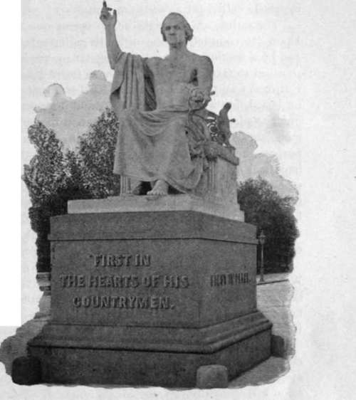

Greenough's Statue Of Washington (Similar To Statue Of Zeus)
Description
This section is from the book "The National Capitol. Its Architecture Art And History", by George C. Hazelton, Jr. Also available from Amazon: The National Capitol Its Architecture Art and History.
Greenough's Statue Of Washington (Similar To Statue Of Zeus)
On the eastern plaza, about five hundred feet from the Capitol, resting upon a low granite pedestal, is a colossal statue in marble of Washington, which has enjoyed a remarkable history. The figure, scantily arrayed in the toga of a Roman senator, is represented in a sitting posture. The left hand clasps a short sword, the right points towards heaven. This is the work of Horatio Greenough.
" It is the birth of my thought," the artist writes. " I have sacrificed to it the flower of my days and the freshness of my strength; its every lineament has been moistened with the sweat of my toil and the tears of my exile. I would not barter away its association with my name for the proudest fortune avarice ever dreamed of. In giving it up to the nation that has done me the honor to order it at my hands, I respectfully claim for it that protection which it is the boast of civilization to afford to art, and which a generous enemy has more than once been seen to extend even to the monuments of his own defeat".
Greenough must have had an attractive personality to call forth the following praise from Emerson: " At Florence, chief among artists I found Horatio Greenough, the American sculptor. His face was so handsome, and his person so well formed, that he might be pardoned, if, as was alleged, the face of his Medora, and the figure of a colossal Achilles in clay, were idealizations of his own. Greenough was a superior man, ardent and eloquent, and all his opinions had elevation and magnanimity. He was a votary of the Greeks, and impatient of Gothic art".
On the base of the statue, also designed by Greenough, are inscribed words from General Henry Lee's oration before Congress, December 16, 1799, which were embodied as well in the resolution on the death of Washington, introduced into the House on the 19th by John Marshall, then a Representative from Virginia: "First in War, First in Peace, First in the Hearts of his Countrymen." On the back of the Roman chair is the following Latin inscription:
Simulacrum istud ad magnum Libertatis exemplum nec sine ipsa duraturum Horatius Greenough faciebat.*
* Horatio Greenough made this statue as a grand example of Liberty nor without it would it endure. Simulacrum is generally used of a statue of a god ; therefore signum was at all aware of it, and followed the bent of his own desire; and the authorities themselves accepted without question the undraped Roman Washington enthroned in a chair of state in fulfilment of a contract which, as well as the act of September 9, 1841, making the final appropriation, expressly called for a pedestrian statue.
The desire to honor Washington with a suitable statue was early manifest. On August 7, 1783, the Continental Congress resolved unanimously, ten States being present, that an equestrian statue of George Washington be erected at the place where the residence of Congress should be established. The resolution further specified that he be represented "in a Roman dress, holding a truncheon in his right hand, and his head encircled with a laurel wreath." This resolution w is never carried into effect.
On the 18th of February, 1832, the House of Representatives resolved " That the President cf the United States be authorized to employ Horatio Greenough, of Massachusetts, to execute, in marble, a full length pedestrian statue of Washington, to be placed in the centre of the rotundo of the Capitol; the head to be a copy of Houdon's Washington, and the accessories to be left to the judgment of the artist." The Secretary of State immediately greenough's washington addressed a letter of instructions to Greenough for carrying the resolution into effect. The contract itself with the artist was made under the act of July 14th, which appropriated $5,000 "to enable the President of the United States to contract with a skilful artist to execute, in marble, a pedestrian statue of George Washington, to be placed in the centre of the rotundo of the Capitol".
The question as to what constituted a pedestrian statue was popularly mooted at the time. The artist evidently disregarded the controversy, if he would be better. Fecit would be better Latin than faciebat; while a decidedly preferable arrangement of words would be " ad exemplum Libertatis magnum nec sine ipsa dura-turum"—"great and not destined without it to endure." The one thing absolutely wrong, as it seems, is istud, which should be hoc.
The statue, which weighs nearly twenty-one tons, was chiseled in Florence. Upon its completion, the difficulty of bringing it safely to America arose; and by a resolution passed May 27, 1840, the Secretary of the Navy was authorized to take immediate measures for its transportation and erection in the National Capitol. Commodore Hull was sent with a vessel of war to take it on board, but when he found it would be necessary to rip up her decks in order to place the cumbersome burden in the hold, he demurred. A merchantman, the American ship Sea, Captain Delano, was then chartered for the purpose, her hatches enlarged, and the decks otherwise prepared to receive the huge marble. The passage was made in safety in spite of the danger from such an unwieldy cargo, and the statue was transferred to the Capitol without breaking, in 1841. The doors at the east front of the building were found, however, to be too small; and the masonry had to be cut away before the marble finally reached its proposed resting place in the rotunda, at Greenough's request, between its center and the door leading to the Library.
" In this hall," writes Dickens in 1842, " Mr. Greenough's large statue of Washington has been lately placed. It has great merits of course, but it struck me as being rather strained and violent for its subject. I could wish, however, to have seen it in a better light than it can ever be viewed in where it stands".
Continue to:
- prev: Marshall's Statue
- Table of Contents
- next: Greenough's Statue Of Washington (Similar To Statue Of Zeus). Continued